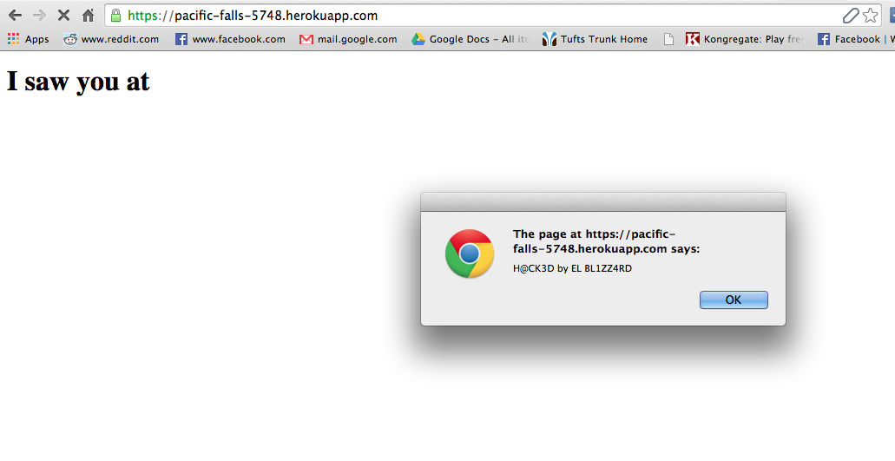

The following assessment is to test the security of the Marauder's Map developed by Barry Maswan for Tufts University Comp 20, Spring 2015. The Marauder's Map web application was designed to specs given by Ming Chow, to allow users to see where all users of the web app are using it from on a map of the world.
The bulk of the vulnerabilities were uncovered with black-box testing, i.e. without looking at the source code for the server. Tests were undertaken by supplying the server with various different inputs, and noting what responses were obtained, until desired results occurred. The only tools used for this were PostMan and curl.
The main issues encountered with this site were related to the fact that user inputs were not verified for accuracy. Anyone with access to the url of this website can provide false information to the server. Additionally, and even more importantly, it is currently very easy for a user to input additional code to the server that gives a third party control over what is displayed to all users. For instance, a malicious user could easily cause this site to redirect to a competitor's site, or display heinous or unpleasant material. Luckily, there are easy steps to be taken to fix these problems. The main fix is validate all user input to make sure that we only allow users to input the kinds of data that the site is designed to use.
POST sizes can be up to 100 KB, can be used to fill server and perform extremely large script injection
Server side issue
High. There is absolutely no reason that input of this size should be allowed for a POST to this site. The maximum size of any given POST should be on the order of a few dozen Bytes, not 10,000 times that. There is no protection on how much garbage can be added to the database by any one user. A malicious user could fill up the database with absolute garbage of extraordinary amounts. However, even if the limit to the POST size was lower, someone could perform the same effect by just doing tons of smaller POSTs, it would just take longer.
This issue was found by POSTing increasingly larger and larger files to the sendLocation API until a cutoff was found, using curl. This was determined to be just over 101 KB.
The effect of this issue is that any user can post up to 101 KB of data to the server. This could be used to fill the server with garbage until it reaches its total capacity, or could be used to insert huge XSS attacks (which are addressed as the next issue).
Additionally, a 100 MB file was POSTed to see how the server would handle a file drastically above the limit. An error was returned to me from the server, as seen here:
Error: request entity too large
at makeError (/app/node_modules/body-parser/node_modules/raw-body/index.js:198:15)
at module.exports …
There is no reason that the server should be returning this error. This gives a malicious user much too much insight into the server code. (Really, the fact that errors are being returned is in and of itself a massively huge separate issue, but as this was the only specific error found that was returned, I have included it under this heading).
This picture shows not even 1/10 of how large the input to a single login field in one POST was. I could not include the proof in this document without needing to print out many many extra pages. Refer to the site itself to see this for oneself.
To fix this, first off there needs to be a cutoff implemented for all fields stored into the database that are given by a user. This could be done in this instance by checking all fields' lengths before storing them, and not storing them if they are above a certain threshold, and instead returning an explanatory error message to the user. Beyond this, changing the actual cutoffs for POST size in the heroku server itself would be the strongest solution, but would need to be changed if the site in the future wanted to allow large data POSTs for other functions. Lastly, error handling should be implemented into the server to prevent massive errors from being spat back.
Server
High. XSS vulnerability allows a malicious user to completely hijack the website. Obviously, one must retain control over their own website, and any vulnerability that allows someone to pose as you, steal data, and display whatever they want, is a massive massive problem.
There is absolutely no protection to prevent a malicious user from performing code injection at the server page. This means that basically any scripts can be run on the page by anyone with the desire to hack it. This is incredibly obviously a huge security risk.
If you navigate to the html page of the heroku app, you will now be greeted with an alert that the page has been hacked, as seen here.
To fix this problem, an input validator should be implemented that assures that all inputs are stripped of special characters before they are stored into the database. I.e. replace all ‘<’, ‘>’, etc with their HTML equivalents.
Users are not verified to be sending their POST from where they claim to be.
Server
Medium. For a website that is supposed to show where all of its users are, this vulnerability makes the site potentially completely false, with users able to POST that they are wherever they want. However, users being checked in from fake locations is less dangerous to the site than XSS, thus we will call this a medium risk.
The server for this project has an API to POST where a user is logged in, which is how the client side HTML sends the data. However, a user can bypass using the client side HTML, and directly POST whatever location they want to claim to be POSTing from.
Believe it or not, elBLIZZARD was not at 1337,1337 (which is not even a real Lat/Lng anyway!). I would have shown this proof on the marauders map itself, but right now that page is crashed for reasons unrelated to this testing.
To prevent this, the API's on the server should restrict where POSTs can originate from by changing the headers supplied. For instance, in line 18 and line 54:
response.header("Access-Control-Allow-Origin", "*");
the * should be replaced with http://tuftsdev.github.io/comp20-bmaswan/mmap/
Overall, the security on this site is terrible. If this were an actual company's website, it would be destroyed in seconds. Luckily, this is just a student project that was not designed to be be secure in anyway.
With some basic steps, the security of this site can rapidly be improved. By implementing an input validator, massively reducing the largest allowed POST, and changing the headers, the biggest vulnerabilities can be eliminated immediately.